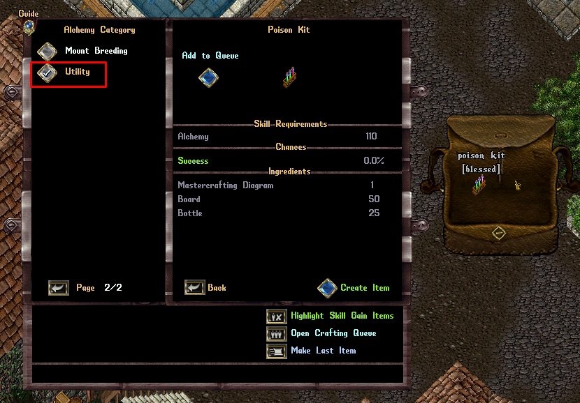
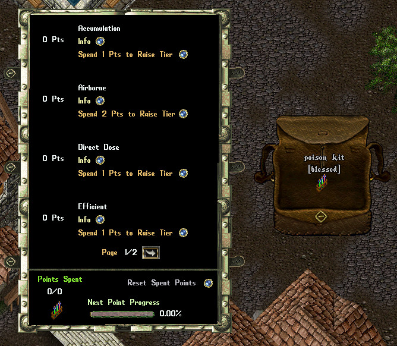
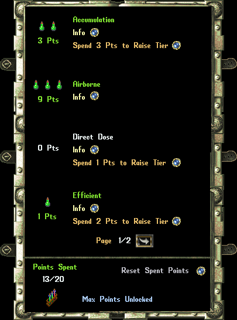

以下是可用的毒药工具包升级列表（数值依次对应 1 阶位 / 2 阶位 / 3 阶位）：
| 毒药工具包升级 Poison Kit Upgrades | ||
|---|---|---|
| 名称 Name | 各阶位消耗 Points Per Tier | 说明 Description |
| 蓄积 Accumulation |
1 / 2 / 2 | 对中毒目标的伤害提高 (3% / 9% / 15%) |
| 散播 Airborne |
1 / 2 / 2 | 将多个中毒效果同时生效所造成的伤害惩罚，降低为正常的 (10% / 30% / 50%)。同时结算多个毒跳时，降低量减半。 |
| 腐蚀 Caustic |
1 / 2 / 2 | 毒刺（Poison Sting）触发几率提高为正常的 (4% / 12% / 20%)，且毒刺冷却时间缩短 (0.4 / 1.2 / 2.0) 秒 |
| 直接给毒 Direct Dose |
1 / 2 / 2 | 施加新的或升级的中毒时，有 20% / 60% / 100% 几率立即结算 1 次毒跳 |
| 高效 Efficient |
1 / 2 / 2 | 毒跳伤害提高 (5% / 15% / 25%)，并有 (15% / 45% / 75%) 几率在施加中毒时不消耗武器毒药充能，或在法术升级时不消耗颠茄 / 致命药水 |
| 削弱 Enfeeble |
1 / 2 / 2 | 对中毒生物（剧毒及以上）获得 (4% / 12% / 20%) 伤害抗性 |
| 易感 Susceptible |
1 / 2 / 2 | 毒跳伤害提高 (5% / 15% / 25%)，并忽略目标 (10% / 30% / 50%) 的毒素抗性 |
| 定向毒液 Targeted Venom |
1 / 2 / 2 | 若玩家当前仅使一只生物处于中毒状态，则毒跳伤害提高 (40% / 120% / 200%)。同时结算多个毒跳时，加成量减半。 |
注：以上「毒药工具包升级」为官方 Wiki 中的 Poison Kit Upgrades 表（8 项，每项 1/2/2 点），中文译述仅供参考，数值以游戏内与官方补丁公告为准。